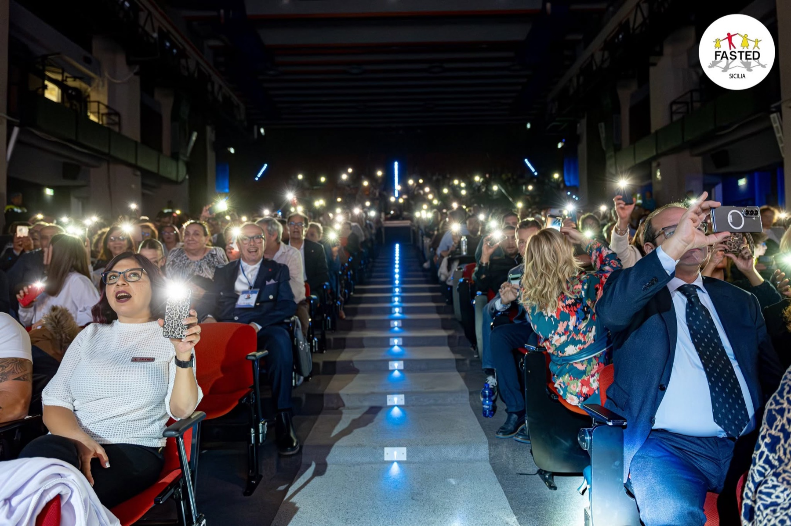
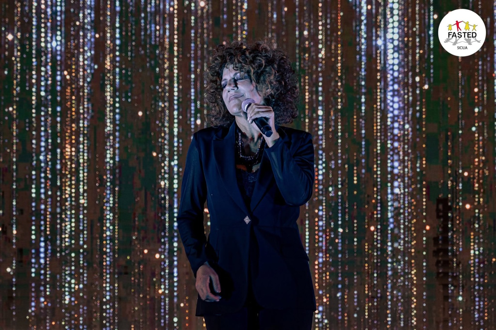
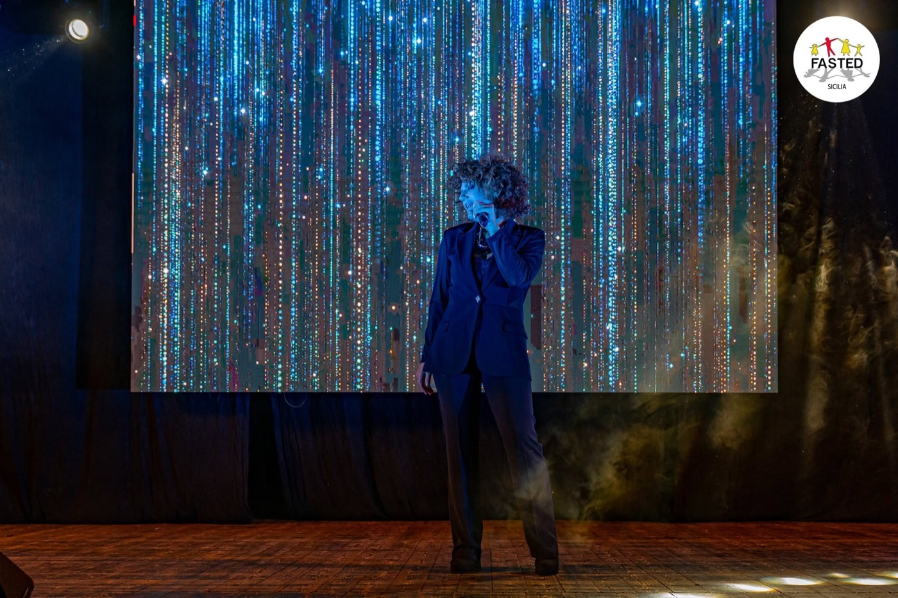
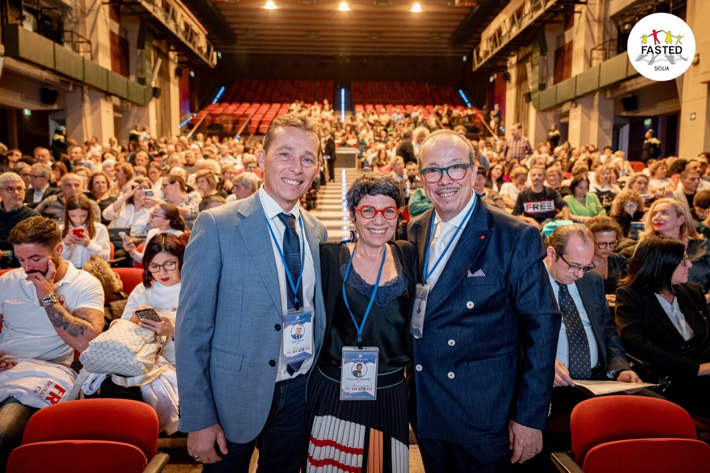
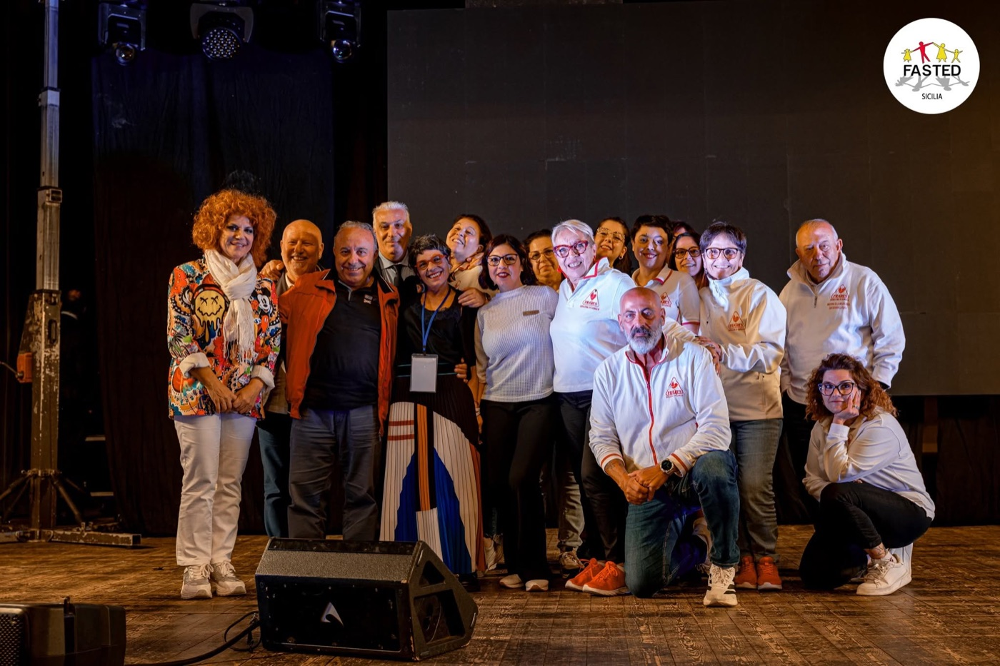

Evento benefico
40 anni per la Vita
La serata per i quarant'anni di FASTED Sicilia, con la firma FASTED × Freeze Studio.
FASTED Sicilia ETS è la federazione delle associazioni siciliane di talassemia, emoglobinopatie e drepanocitosi. Per i suoi quarant'anni, nell'ottobre 2025, una serata-evento in un teatro pieno: ospiti, musica dal vivo, testimonianze e le associazioni di donatori in sala. Noi c'eravamo, e l'abbiamo raccontata.
La serata, nei video
Un teatro pieno che si accende.
Due racconti verticali firmati FASTED × Freeze Studio: le luci dei telefoni accesi in platea, il palco, la musica e le voci di chi questa storia la porta avanti da quarant'anni.
La serata, nelle foto
Le luci accese, una per una.





Perché la raccontiamo
La comunicazione al servizio di una causa.
Quando il lavoro serve a dare voce a chi si occupa della vita degli altri, i numeri contano meno del racconto. Questa pagina sta nel portfolio per un motivo semplice: crediamo che saper raccontare valga anche, e soprattutto, quando è per beneficenza.